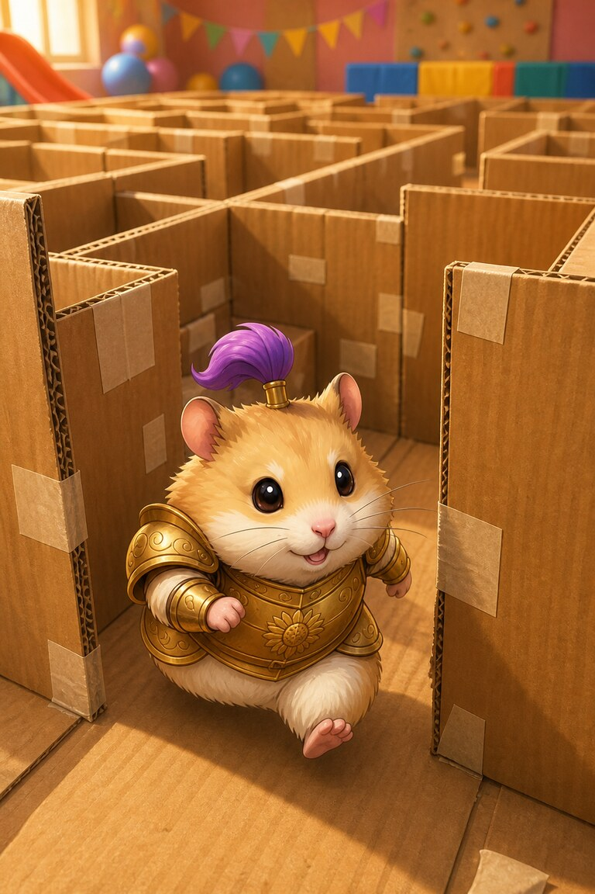
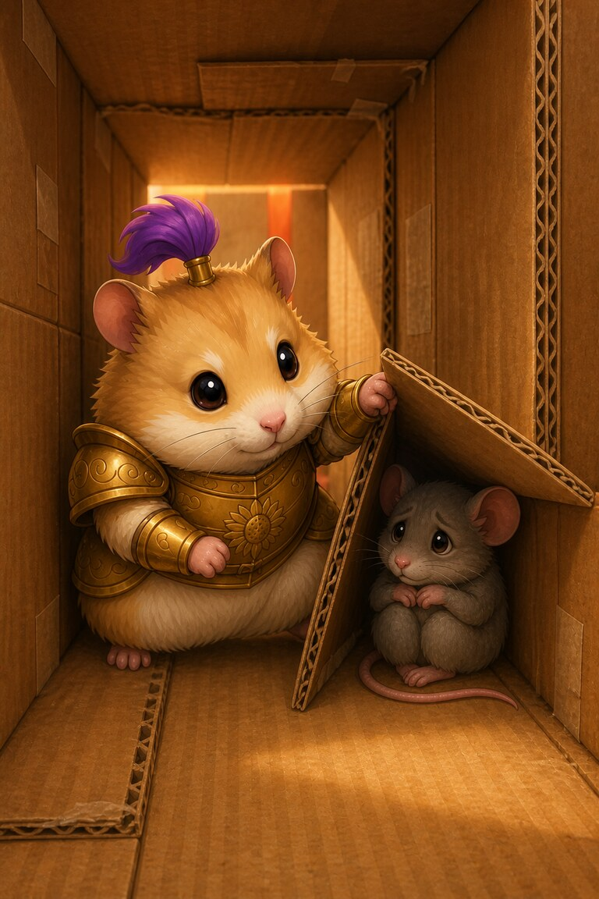
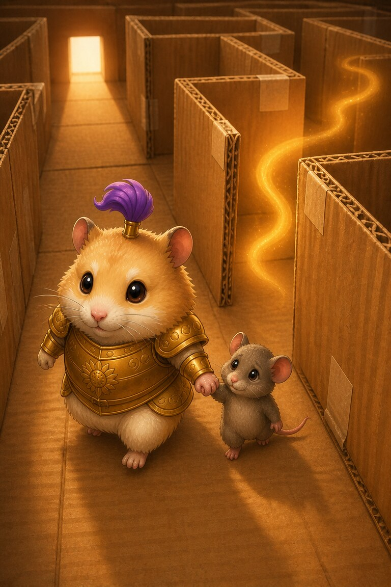
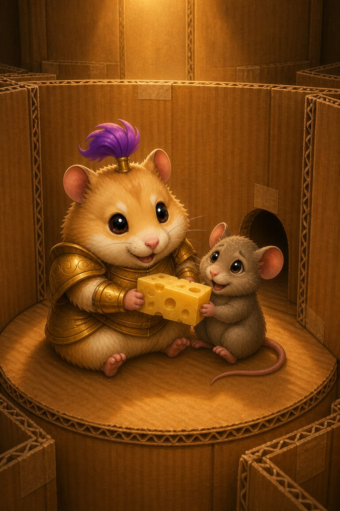

Page 1 of 4
Ham-and-Cheese enters the cardboard maze certain his nose will lead him straight to the prize. He wants to beat his fastest time.
A four-page maze story about a record attempt and a lost little mouse.

Ham-and-Cheese enters the cardboard maze certain his nose will lead him straight to the prize. He wants to beat his fastest time.

Inside a narrow tunnel, he hears a squeak behind a loose flap. A younger mouse has lost both the exit and her courage.

The cheesy smell drifts around the next turn, but Ham walks away from it to guide the mouse outside. His old record slips away.

They solve the route together and reach the centre from a new direction. The cheese tastes better shared—and the mouse asks for another race.
He stopped to help a lost mouse.
SnackPack Sentences & Spelling has many more short reads like this one, plus the Reading Trail, word packs and literacy games.
Next storyFoxy‑Lox’s Mystery Trail
Know a family or class who would enjoy it?